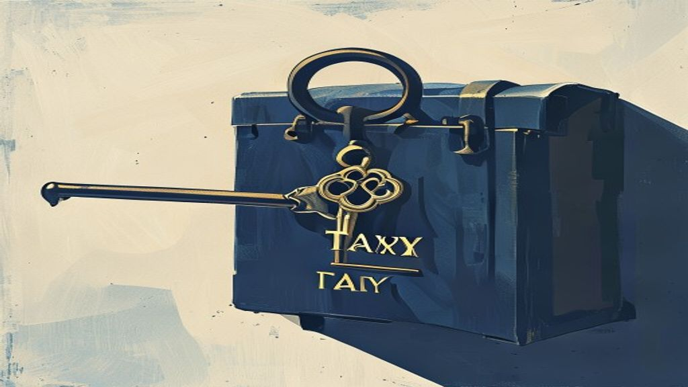

Latest insights
Personal-finance explainers, market briefs, F&O positioning and business stories — all in one place.

Your Stock's Closing Price Just Got a New Twist: Understanding the Closing Auction
From August 3, 2026, how the closing price for certain shares is decided is changing. This new system, called the 'Closing Auction Session' (CAS), will apply .

US Fed's Rate Hold: Impact on the Indian Stock Market
The US Federal Reserve recently maintained its federal funds rate, indicating a status quo in monetary policy for now. This decision generally eases pressure .

ITR Filed & Verified? How the Income Tax Department Spots Mismatches
The Income Tax Department (ITD) uses technology to cross-verify information declared in your ITR with data from various sources like Form 26AS, Annual Informa.

Pre-Market Brief — 30 July 2026
Global Tone:** US markets closed significantly lower, while Asian markets are mixed to negative this morning, setting a cautious global backdrop. **GIFT Nifty.
Your Money Just Got Safer: RBI Governor Pushes for Stronger Bank Security
RBI Governor Shaktikanta Das recently urged banks to boost their cybersecurity measures. This push comes as online financial frauds are becoming more common a.

Understanding the Chip Rout's Impact on Emerging Markets
A notable sell-off in semiconductor company stocks has significantly impacted global markets. This 'chip rout' particularly pressured Asian equity markets and.

No Form 16 Yet? File Your ITR Before 31st July Deadline
Form 16 is a consolidated certificate from your employer that simplifies filing your Income Tax Return (ITR), but it is not the only document required. Salari.

Market Wrap — 29 July 2026
Indian benchmark indices rallied today, with Nifty 50 closing over 1% higher and Bank Nifty also posting solid gains. The market was buoyed by strong domestic.
Pre-Market Brief — 29 July 2026
Global markets show a mixed to cautious tone, with significant weakness in some Asian indices. GIFT Nifty indicates a slightly negative open for the Indian ma.
India F&O Pulse — 29 Jul 2026: what the day's options & futures positioning is whispering
End-of-day reading of India's F&O open interest, PCR, max pain and FII positioning — explained simply.


Business explained
E-commerce giant Flipkart is entering the food delivery market using the government-backed ONDC network. This means you might soon order food from a new app c.

SEBI's New MF-Only PMS: A ₹25 Lakh Gateway to Managed Funds
SEBI has proposed a new category of Portfolio Management Services (PMS) that will exclusively invest in mutual funds. This 'MF-only PMS' aims to bridge the ga.

Building Your First Mutual Fund Portfolio at 25: An Ideal Approach
Starting early with mutual funds at 25 provides a significant advantage due to the power of compounding. Focus on aligning your investments with specific fina.

Market Wrap — 28 July 2026
Indian benchmark indices, Nifty 50 and Bank Nifty, ended marginally lower today after a day of range-bound trading. Weakness in FMCG, Energy, and PSU Bank sec.

CBDT's New Crypto Reporting Guidance: What Investors Need to Know
The Central Board of Direct Taxes (CBDT) has issued guidance aligning India's crypto reporting with global OECD standards. This framework focuses on how crypt.
India F&O Pulse — 28 Jul 2026: what the day's options & futures positioning is whispering
End-of-day reading of India's F&O open interest, PCR, max pain and FII positioning — explained simply.


Politics explained
The Haryana government is introducing a new policy to significantly boost Micro, Small, and Medium Enterprises (MSMEs) and exports. A major highlight is the p.
IPO Report Card: 30 to 60 Days After Listing — July 2026
This report looks at 23 IPOs that listed between 32 and 59 days ago. Out of these, 9 companies are currently trading above their original IPO (Initial Public .
Bank Holidays August 2026: Plan Your Finances Around 14 Closure Days
Banks across India will observe up to 14 holidays in August 2026, as per the RBI calendar. These holidays include national, regional, and weekend closures, va.

Real Estate Investing: Taxing REITs, Funds & Property
Investing in real estate can be done directly through physical property, or indirectly via REITs or REIT mutual funds. Capital gains tax rules differ signific.

Market Wrap — 27 July 2026
Indian equities staged a strong rebound, ending a five-session losing streak. Easing geopolitical tensions between the US and Iran, leading to a sharp fall in.

Pre-Market Brief — 27 July 2026
Global markets presented a mixed picture overnight, with US indices split and Asian markets showing varied performance. GIFT Nifty is signalling a positive op.
Upcoming IPOs, Explained Simply — July 2026
This week, three IPOs — Xtranet Technologies, INDO-MIM, and Lohia Corp — are closing today, July 27th. Propshop Events and Exhibitions' IPO opens today, July .
India F&O Pulse — 27 Jul 2026: what the day's options & futures positioning is whispering
End-of-day reading of India's F&O open interest, PCR, max pain and FII positioning — explained simply.
India's Forex Reserves: Why Having a Big Money Pile Matters
India keeps a large stash of foreign money, mainly US dollars, called foreign exchange (forex) reserves. This money helps keep the Indian rupee stable and pay.
SEBI's Proposed PMS Changes: What They Mean for Your Portfolio
SEBI is considering significant changes to Portfolio Management Services (PMS) regulations, aiming to broaden their appeal and utility. The proposals are expe.

ITR Filing Deadline for AY 2025-26: 5 Key Things to Know
The primary deadline for filing your Income Tax Return (ITR) for Assessment Year (AY) 2025-26 (Financial Year 2024-25) for most individual taxpayers has been .
Your Income Tax Return (ITR) Deadline is Near!
The deadline to file your Income Tax Return (ITR) for the financial year 2025-26 is typically July 31, 2026. Filing your ITR is crucial, even if you don't owe.
Gold & Silver Rebound: What Rising Tensions Mean for Your Portfolio
Global gold and silver prices saw significant increases on July 24th, driven by escalating Middle East tensions. Gold surged past $4,070, while silver approac.

ITR Portal MSP Penalised: What It Means for Your Filing
The government has penalised the managed service provider (MSP) of the Income Tax e-filing portal for technical issues. These issues had previously led to ext.

American Express: Strong Revenue, Rising Costs & Investor Sentiment
American Express reported a 10% increase in quarterly revenue, reaching $19.6 billion. Total card spending, or billed business, grew 9% year-over-year to $455.
Stock Market Closing Prices Are Changing: What the New 'Closing Auction' Means for You
From August 3, 2026, how daily closing prices for many stocks are calculated is changing. Instead of a simple average, a new 'Closing Auction Session' (CAS) w.
Dollar Rises: Iran War Fuels Rate Hike Bets & Your Finances
The US Dollar has strengthened significantly due to escalating conflict in the Middle East, particularly involving Iran. Intensifying geopolitical tensions ar.

Foreign Salary in NRE Account Not Taxable for NRIs: ITAT Clarifies
The Income Tax Appellate Tribunal (ITAT) Ahmedabad has ruled that foreign salary earned by an NRI outside India is not taxable in India. This non-taxable stat.

Market Wrap — 24 July 2026
Indian equities saw a mixed closing today, with the Nifty 50 declining while Bank Nifty posted gains. Global cues, particularly concerns over rising oil price.

Pre-Market Brief — 24 July 2026
Global markets saw broad-based selling overnight, with US and Asian indices closing notably lower. GIFT Nifty is signalling a flat to slightly negative open f.
India F&O Pulse — 24 Jul 2026: what the day's options & futures positioning is whispering
End-of-day reading of India's F&O open interest, PCR, max pain and FII positioning — explained simply.
Madhabi Puri Buch: Making Your Online Financial Advice Safer
SEBI Chairperson Madhabi Puri Buch is leading efforts to make online financial advice trustworthy. The market regulator is tightening rules for 'finfluencers'.

SOA vs Demat for MFs: SEBI's New Rule & Your Choice
SEBI has recently allowed standing instructions for Systematic Withdrawal Plans (SWP) and Systematic Transfer Plans (STP) on mutual fund units held in demat a.

Unutilised CGAS Funds: Don't Let 3-Year Deadline Trigger Tax
The Capital Gains Accounts Scheme (CGAS) allows you to defer capital gains tax by depositing sale proceeds. A common misconception is that tax deferral lasts .

Market Wrap — 23 July 2026
Indian benchmark indices extended their losing streak for a fourth consecutive session, with Nifty 50 and Bank Nifty closing significantly lower. Rising globa.
Pre-Market Brief — 23 July 2026
Global markets presented a mixed picture overnight, with US tech indices closing lower while European and most Asian markets posted gains. GIFT Nifty is signa.

Intel (INTC) Stock Q2 2026 Earnings Preview: What to Expect
Intel is set to announce its Q2 2026 earnings after market close on July 23, 2026, with analysts expecting modest profitability and revenue growth. Consensus .
India F&O Pulse — 23 Jul 2026: what the day's options & futures positioning is whispering
End-of-day reading of India's F&O open interest, PCR, max pain and FII positioning — explained simply.
India Boosts 'Make in India' Electronics: What the PLI Scheme Means for You
The government is giving financial incentives to companies that make more electronics in India. This is part of the Production Linked Incentive (PLI) scheme, .

Article 265: Can Government Levy Taxes Without a Law?
Article 265 of the Indian Constitution mandates that no tax can be imposed or collected by the government without a valid law. This constitutional provision a.

ITR Filing 2026: CBDT Upgrades Portal for Smoother Returns
The Income Tax Department has significantly upgraded its e-filing portal to manage high traffic during the ITR filing season. The portal is now equipped to pr.

Market Wrap — 22 July 2026
Indian benchmark indices, Nifty 50 and Bank Nifty, closed lower for the day. Rising crude oil prices globally and concerns over Middle Eastern supply disrupti.